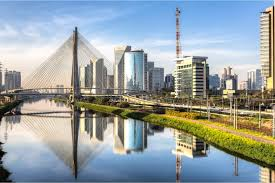
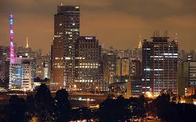
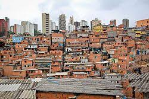

|  |  |  |
São Paulo é o estado mais populoso e economicamente desenvolvido do Brasil, localizado na região Sudeste do país. Com mais de 44 milhões de habitantes, é considerado o motor econômico da nação, contribuindo com uma grande parte do Produto Interno Bruto (PIB) brasileiro. A capital, também chamada São Paulo, é a maior cidade do Brasil e da América do Sul, sendo um centro financeiro, cultural e comercial de grande importância. O estado é conhecido por sua diversidade econômica, com destaque para setores como indústria, serviços, comércio e agronegócio.
Além disso, São Paulo abriga importantes instituições de ensino superior, como a USP, a UNICAMP e a UNESP, além de grandes centros de pesquisa e inovação. No aspecto cultural e turístico, São Paulo também se destaca. A capital oferece uma infinidade de atrações, como museus (MASP, Museu do Ipiranga), parques (Ibirapuera), centros culturais, teatros, shows e eventos internacionais. O estado ainda possui um litoral com belas praias, como as de Santos, Guarujá e Ubatuba, além de destinos turísticos no interior, como Campos do Jordão, Brotas e Holambra. A diversidade étnica e cultural é outro traço marcante do estado, refletida na culinária, nas festas populares e na arquitetura. Com sua grande infraestrutura de transporte e serviços, São Paulo é um lugar que combina modernidade, oportunidades e tradição.
São Paulo está localizado na região Sudeste do Brasil, fazendo divisa com os estados do Rio de Janeiro, Minas Gerais, Paraná e Mato Grosso do Sul, além de ter litoral banhado pelo Oceano Atlântico.
Com mais de 44 milhões de habitantes, o estado de São Paulo tem a maior população entre todos os estados brasileiros. A capital, São Paulo, possui mais de 12 milhões de habitantes, sendo a cidade mais populosa do Brasil e da América do Sul.
São Paulo é o motor econômico do Brasil, respondendo por cerca de 30% do PIB nacional. O estado tem uma economia diversificada, com forte presença de: Indústrias (automobilística, química, têxtil, alimentícia) Setor financeiro (abrigando a B3 - Bolsa de Valores) Agronegócio (cana-de-açúcar, café, laranja, soja) Comércio e serviços
São Paulo é um polo educacional, com universidades renomadas como:
O estado possui uma das melhores infraestruturas do país, com: Aeroportos internacionais (Guarulhos e Congonhas) Porto de Santos (o maior do Brasil) Rodovias modernas (como a Dutra, Anhanguera, Bandeirantes) A capital também conta com um sistema de metrô e trem urbano em constante expansão.
O clima em São Paulo varia entre o tropical e subtropical, com verões quentes e úmidos e invernos mais secos e amenos. Em cidades serranas, como Campos do Jordão, as temperaturas podem cair bastante no inverno.